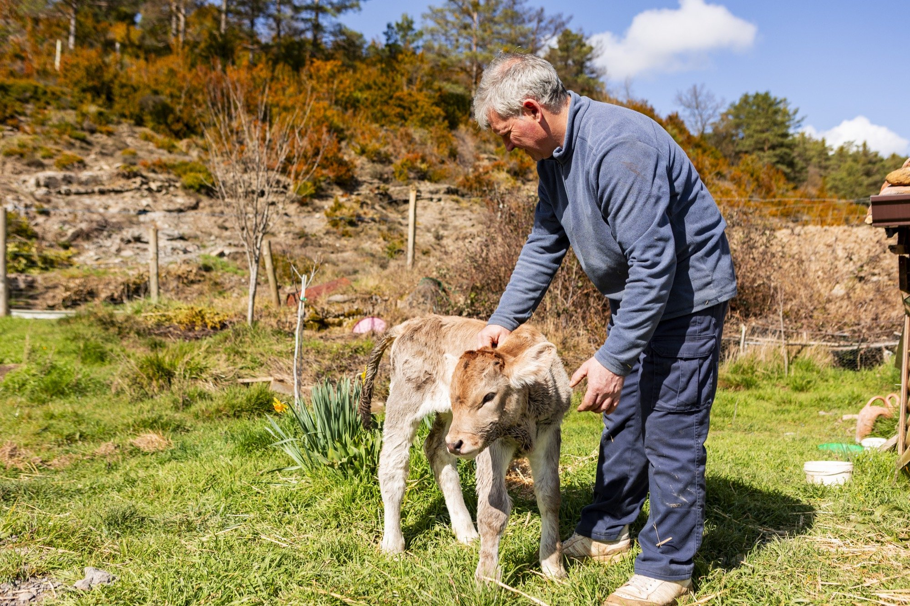
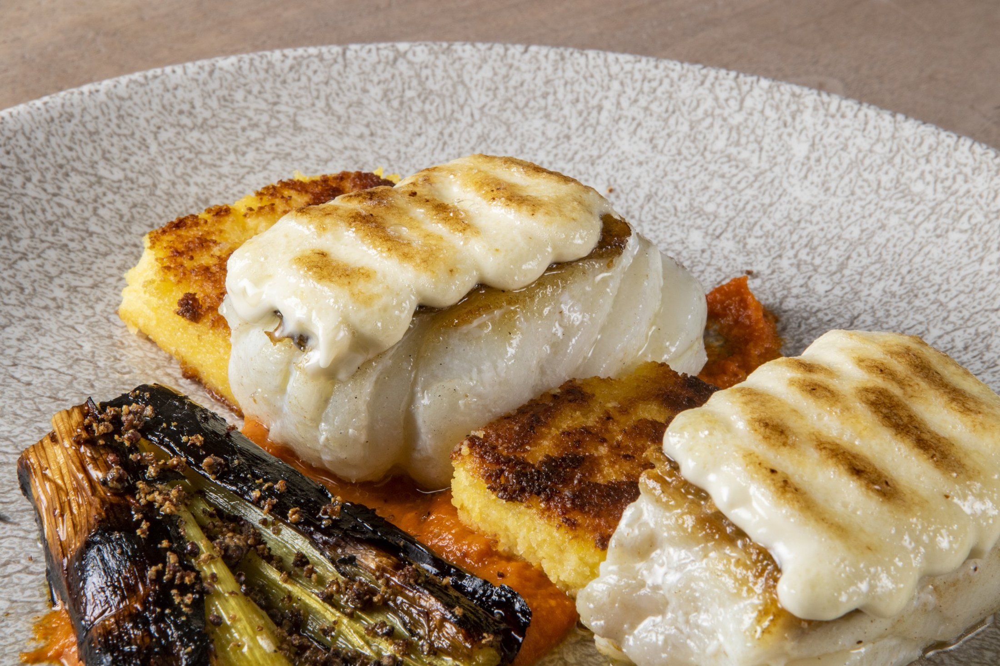
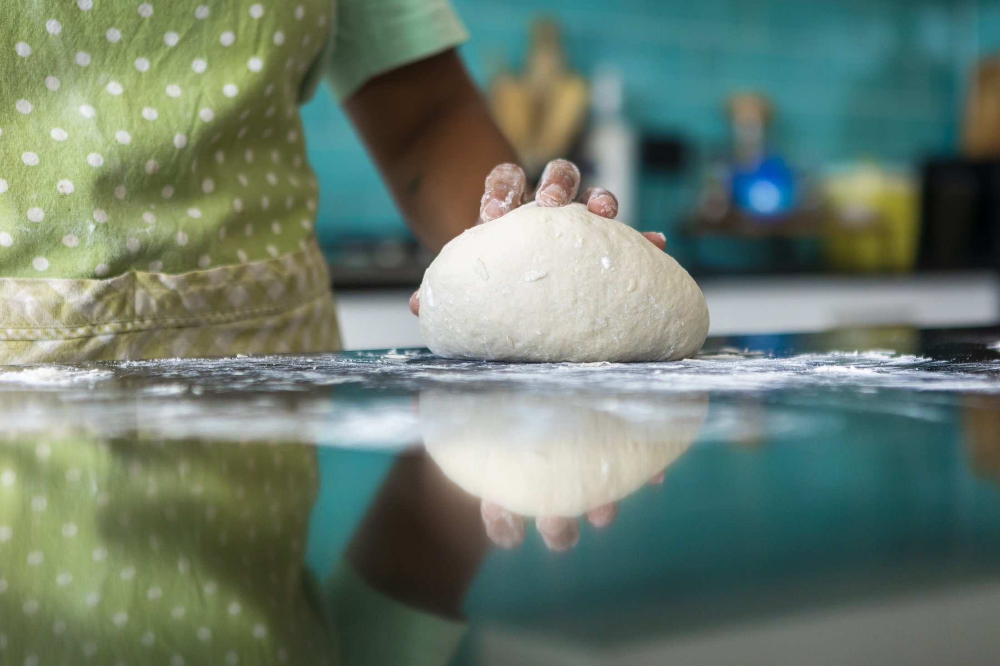

FOTOGRAFÍA Y VÍDEO
Contenido para vuestra promoción
Crear material original de rutas, costa, patrimonio y experiencias locales para que vuestro equipo lo utilice en sus canales y campañas.

Una producción visual para mostrar su costa, sus rutas y la vida que las rodea.
DESCUBRIR LA PROPUESTACrear fotografía y vídeo nuevos que ayuden a descubrir el municipio a través de sus lugares y de quienes les dan vida.
La propuesta parte de vuestra oferta de costa, patrimonio, rutas y gastronomía. Juntos elegiríamos las experiencias y temporadas que queréis impulsar, para producir contenido útil en vuestra web, publicaciones y campañas.
Las imágenes de esta página son ejemplos de mi archivo y no representan necesariamente Castro-Urdiales. La producción propuesta se realizaría en el municipio.

Seguir un recorrido desde el casco histórico y la costa hacia los senderos y pueblos del municipio. Mostrar el paisaje junto a los encuentros, sabores y detalles que hacen que alguien quiera visitarlo.
Una línea que podemos adaptar a las rutas existentes, como el Camino de Santiago, el casco medieval o las vías verdes, según las prioridades del equipo de turismo.
Dos formas de trabajar, definidas según lo que necesitéis y los lugares que queráis promover.
Crear material original de rutas, costa, patrimonio y experiencias locales para que vuestro equipo lo utilice en sus canales y campañas.

Desarrollar juntos una campaña que conecte lugares, gastronomía y personas, desde la idea hasta las piezas finales que necesitéis.

Soy Juan Aizpuru, fotógrafo y realizador con base en Bilbao. La cercanía a Castro-Urdiales facilita planificar jornadas en distintas temporadas y condiciones de luz, y trabajar con personas y colaboradores locales.
El alcance, los usos y los tiempos se definen con vuestro equipo. Trabajo con un equipo profesional y conservo la autoría de las imágenes.
CONOCER MI TRABAJOMe gustaría conocer vuestras prioridades de promoción y explorar cómo podemos ayudaros a mostrarlas.
PROPONER UNA REUNIÓN